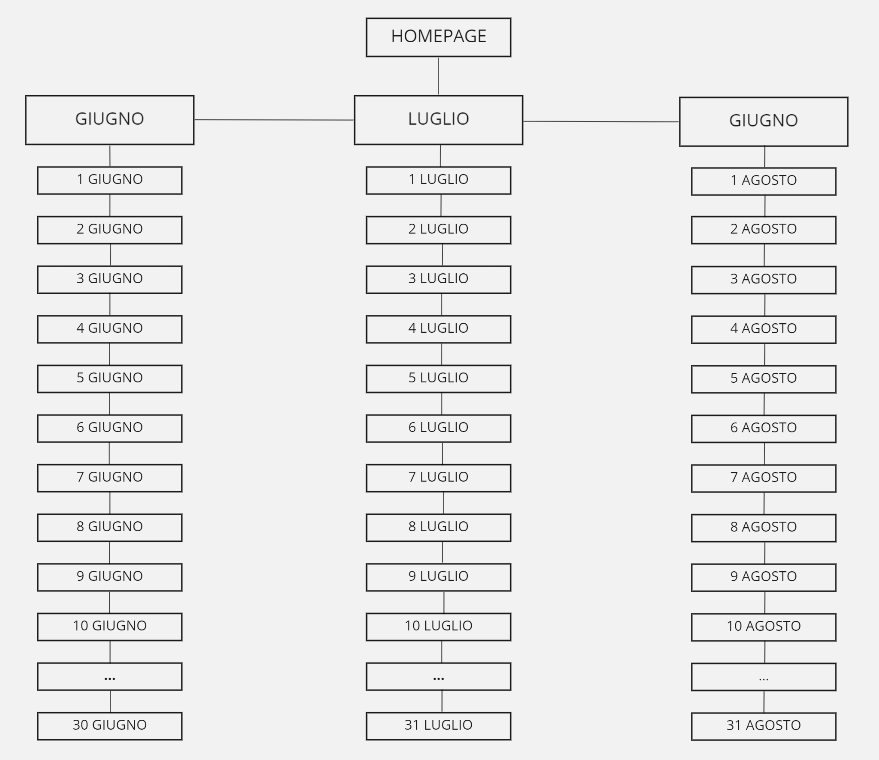
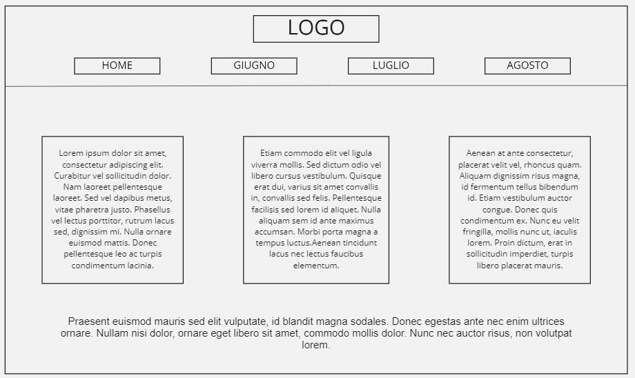
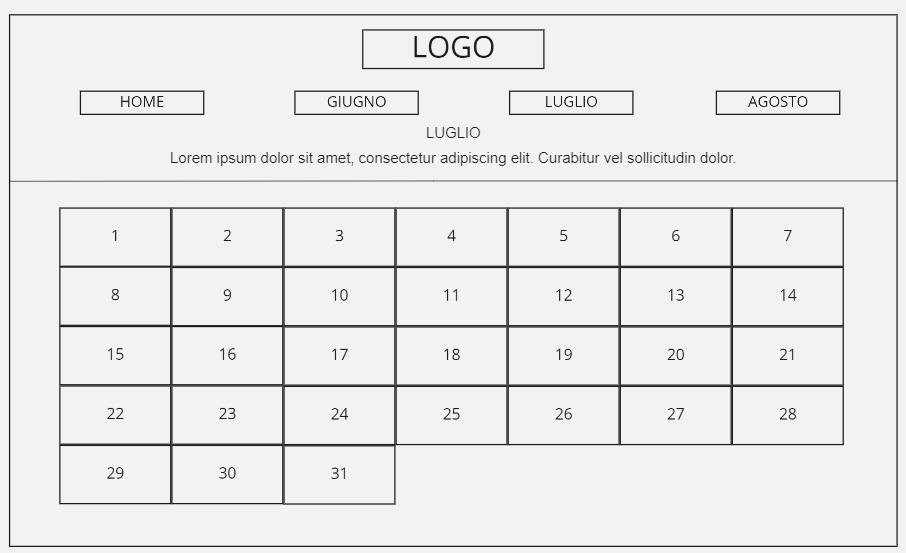
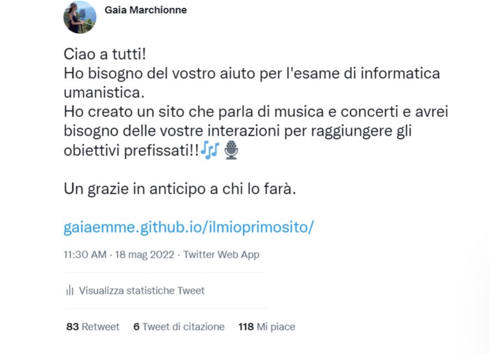

DOCUMENTAZIONE
ABSTRACT
ConcertWanted nasce dalla volontà di ricominciare a vivere un'estate normale, come eravamo abituati a fare. Il sito è stato creato con l'intenzione di raccogliere tutti i concerti degli artisti di maggior successo nel nostro Paese e dare la possibilità agli amanti della musica di poter consultare un sito che faciliti la ricerca dei concerti creando un calendario interattivo che permetta tutto ciò. Il sito raccoglie più generi così da non escludere nessuno; ci sono artisti contemporanei maggiormente orientati verso i gusti dei più giovani e artisti di fama internazionale i quali sono amati da tutte le generazioni.
PROJECT MANAGEMENT PLAN
Benchmark
- OBIETTIVO: ConcertWanted ha come obiettivo principale quello di creare, per tutti gli amanti della musica e dei concerti, un’esperienza più semplice nel momento in cui l’utente decide di voler partecipare a un concerto e si trova davanti alle due scelte più importanti che lo riguardano: l’artista e la data
- TARGET: il target a cui si rivolge il sito comprende quella fascia di utenti interessata alla musica e a cui piace andare ai concerti.
Non c’è un genere a cui si rivolge, l’unica discriminante può essere l’età perché è ragionevole pensare che la musica degli artisti del momento possa non piacere a utenti più grandi e come questi ultimi possano preferire l’acquisto dei biglietti in uno store fisico e non su un sito online.
- COMPETITOR: ho analizzato due competitor, TeamWorld e Agenda online.it.
TeamWorld è un blog che si occupa di svariati argomenti che riguardano il tempo libero, i quali corrispondono alle varie passioni degli utenti: musica, cinema, concerti, libri e cultura.
Contro: trattando molti temi, la homepage presenta moltissimi articoli diversi tra loro che potrebbero confondere l’utente, senza fargli capire che è possibile consultare un catalogo di tutti i concerti estivi.
Un secondo aspetto negativo riguarda la pagina relativa ai concerti dato che non presenta un layout che la caratterizza, ma ha solo un lunghissimo elenco con nomi e date, il quale potrebbe non aiutare l’orientamento dell’utente
Pro: presenta un catalogo ampissimo con più concerti di diversi artisti nella stessa data che permette all’utente una maggiore scelta
Usabilità: 3/5
Catalogo: 4.5/5
Agenda online.it è un blog molto simile a TeamWorld che tratta molti temi diversi e tra questi sono presente la musica/i concerti. Essendo molto simile a Teamworld presenta pressoché le stesse problematiche.
Contro: presenta testi molto lunghi che non facilitano l’utilizzo e l’orientamento nel sito. Sono scarsi gli elenchi puntati che riportano le varie date degli eventi e questo non rende molto chiaro quali sono i concerti disponibili durante l’estate 2022
Pro: il catalogo di eventi è di carattere internazionale e questo potrebbe scaturire l’interesse di tutti gli appassionati di musica oltreoceano che non hanno spesso la possibilità di assistere a concerti di questa portata
Usabilità: 2/5
Catalogo: 4/5
Struttura e layout
- ARCHITETTURA DEL SITO: la struttura è molto semplice, la quale permette all’utente di orientarsi facilmente nel sito. I collegamenti possibili non sono molti: “Giugno”, ”Luglio” e “Agosto”, tutti raggiungibili dalla homepage
- WIREFRAME
 (Uguale per le tre pagine principali: Giugno, Luglio e Agosto
- LOOK AND FEEL: ci sono due colori principali, il corallo (#FF7F50) e il nero.
Il corallo è stato utilizzato per tutti gli elementi sui quali l’utente deve focalizzare la sua attenzione. Nel titolo, infatti, la parola “concert” è stata realizzata di questo colore. Dello stesso colore sono i calendari nelle tre pagine principali. Ho scelto questo colore perché è un colore caldo che rimanda all’estate e riprende le luci arancioni dello sfondo.
Il nero è il colore che predomina nello sfondo dato che quest’ultimo è stato realizzato con la foto di un concerto sfocata fino al punto in cui risaltassero le luci dei faretti (arancioni e verdi).
Il bianco è presente in tutte le scritte.
L’immagine del logo è stata realizzata da me con lo strumento “Canva” e l’immagine di sfondo l’ho presa da Google Immagini con la licenza CC.
La font da me utilizzata è Titillium Web regular 400 scaricandola da Google Fonts.
Linguaggi e strumenti
- LINGUAGGI: HTML e CSS
- STRUMENTI: Sublime text, Google Fonts, Bootstrap, Canva, Miro, Google Analytics, GitHub e i social media
COMMUNICATION STRATEGY
Background
Esistono già competitor che offrono questo tipo di servizio, ma come ho analizzato precedentemente, non presentano un layout che ne facilitino l’utilizzo. ConcertWanted, invece, pone al centro dell’attenzione il fruitore.
Avendo il layout l’aspetto di un calendario, l’utente è già abituato dall’esperienza quotidiana ad interfacciarsi con esso e di conseguenza sarà facilitato nell0orientamento e nell’utilizzo del sito che non presenta un semplice elenco anonimo di date e nomi.
Obiettivi comunicativi
Uno degli obiettivi principali è quello di facilitare questa esperienza agli amanti della musica ponendo sotto i loro occhi un’agenda già programmata da poter consultare e contemporaneamente rendere possibile un’esperienza diversa dal solito, organizzandosi all’ultimo momento e partire per l’avventura.
Delle 354 visite totali sul sito, 6 provengono dagli Stati Uniti, 3 dalla Francia, 1 dal Cipro, 1 della Germania e 1 dalla Spagna
Target e messaggio
- TARGET: il target fa riferimento a una fetta particolarmente ampia di utenti, giovani ragazzi e persone più adulte che hanno ancora tra le loro passioni l’andare ai concerti e ascoltare musica live. È un sito dedicato a chi ama la musica e a cui piace partecipare ai concerti. È adatto a tutti coloro che posseggono un personal device, una connessione internet e una conoscenza base della navigazione sul web
- MESSAGGIO: il sito invoglia l’utente alla partecipazione di concerti, seppur questi non siano del proprio cantante preferito. Il partecipare a un concerto è un’esperienza unica da fare obbligatoriamente una volta nella vita e se esiste un sito che facilita la consultazione di date e artisti sicuramente si è più invogliati a farlo. Tutto questo per tornare a vivere un’estate “normale” e divertirsi con gli amici facendo qualcosa di nuovo che non è possibile fare quotidianamente
Promozione
Il sito è stato pubblicato su Twitter attraverso la condivisione di un tweet sul mio profilo e la condivisione del link del sito su Whatsapp ad alcuni contatti personali e ad alcuni gruppi così da poter arrivare e raggiungere amici, colleghi, parenti e soprattutto amanti della musica.
La sponsorizzazione ha ottenuto dei risultati maggiori rispetto agli obiettivi prefissati.
Ha raggiunto in totale 89 condivisioni (retweet), 6 di queste con delle citazioni da parte degli utenti per consigliare il mio sito ai loro follower e 118 mi piace